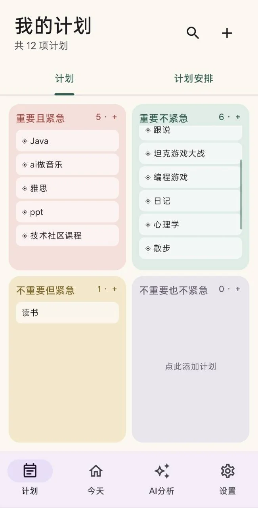
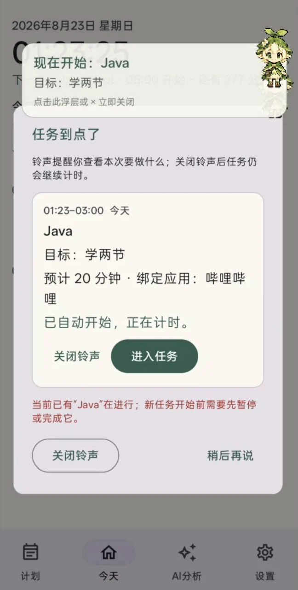
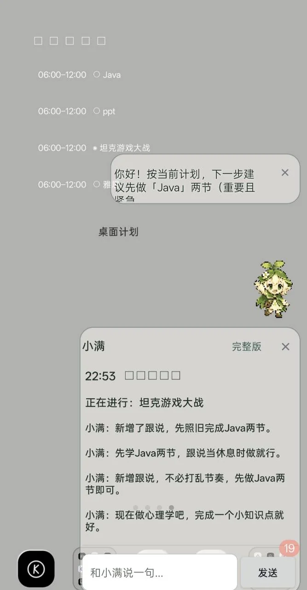
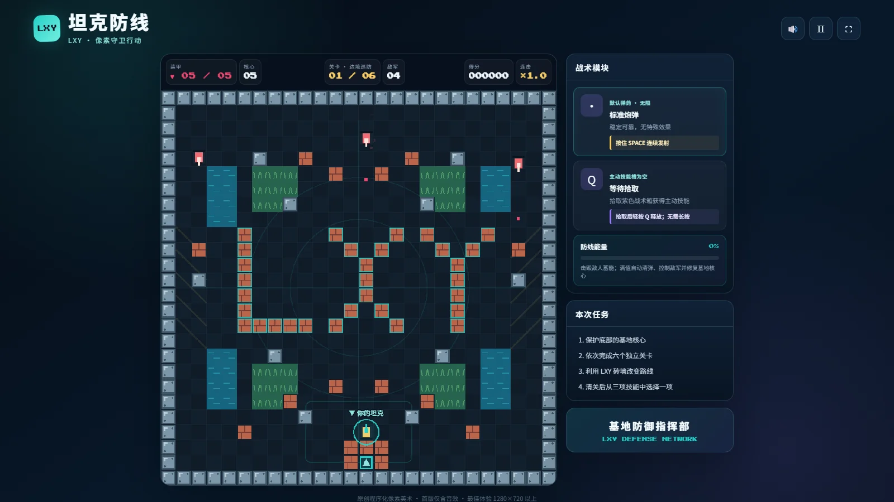

刚刚好
Android App从一个计划管理的想法，到可以安装的完整软件。
- 提出需求，借助 AI 开发，完成测试与 APK 打包。
- 四象限管理计划，到点自动打开预先绑定的应用。
- 接入 API 后，小宠“小满”提供任务提醒；支持 AI 分析计划和日常对话。



河南师范大学 · 软件工程学院
男 · 软件工程（游戏动画方向）
希望加入 AI 研发中心，学习大模型与 Agent 的实际应用。
借助 Codex 实现想法，重视需求确认、测试、调试与持续优化。
已完成本地部署，继续了解模型运行与 Agent 的实际使用。
本地推理个人构思 · AI 辅助实现 · 测试与迭代
从一个计划管理的想法，到可以安装的完整软件。




围绕“守护核心”构思玩法，借助 Codex 完成像素风坦克游戏，并在试玩中持续调整。
借助 AI 将节日主题与视觉想法组合为动态网页，呈现银河、月亮、水面倒影与竖排诗句。
在实际项目中使用 AI 工具，辅助梳理需求、实现功能和排查问题。
Codex 使用最多，主要使用的工具还包括 WorkBuddy、Claude Code；也使用 DeepSeek Harness 进行 Agent 实践。
做出原型只是开始。让作品符合要求，需要不断优化与调试。
结合电脑销售中的产品知识，借助 AI 梳理电脑科普内容，并制作前端动画视频。
目前刚开始尝试，主题不限于显卡。这里展示一条已发布到抖音的显卡科普成片。
单独打开视频软件工程学院
软件工程（游戏动画方向）
现阶段以专业基础学习、AI 工具实践与个人项目积累为主。
学习 AI 相关知识，完成课程与技能认证，取得 6 项证书。
以 Codex 为主要工具完成应用、游戏与网页作品，也使用其他 Agent，并部署千问本地模型。
结合电脑销售知识，尝试 AI 内容梳理与前端动画视频制作，已有一条显卡主题成片发布到抖音。
点击查看原图完整尺寸